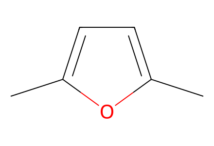
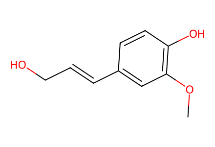
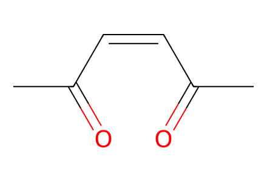
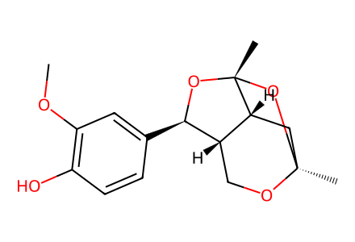
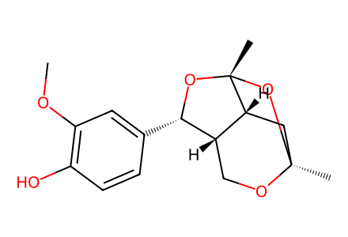

Cc1ccc(C)o15 个分子、3 个制备事件、3 条路径。包括 6a 的制备以及常规/放大两种独立实验；相对构型不作为绝对构型使用，8c 图式与表征图的立体键冲突已保留，待专家复核。
完整 JSON · 逐步 CSV · 路线序列 · SDF · HRMS 核对
| 事件 | 分子连接 | 报告产率 | Canonical reaction SMILES |
|---|---|---|---|
| E01 | dimethylfuran → 6a | not reported | Cc1ccc(C)o1>>CC(=O)/C=C\C(C)=O |
| E02 | 5c + 6a → 7c + 8c | 7c: 74% | CC(=O)/C=C\C(C)=O.COc1cc(/C=C/CO)ccc1O>>COc1cc([C@@H]2O[C@]3(C)O[C@@]4(C)C[C@@H]3[C@@H]2CO4)ccc1O.COc1cc([C@H]2O[C@]3(C)O[C@@]4(C)C[C@@H]3[C@@H]2CO4)ccc1O |
| E03 | 5c + 6a → 7c + 8c | 7c: 65%; 8c: 5% | CC(=O)/C=C\C(C)=O.COc1cc(/C=C/CO)ccc1O>>COc1cc([C@@H]2O[C@]3(C)O[C@@]4(C)C[C@@H]3[C@@H]2CO4)ccc1O.COc1cc([C@H]2O[C@]3(C)O[C@@]4(C)C[C@@H]3[C@@H]2CO4)ccc1O |

Cc1ccc(C)o1
COc1cc(/C=C/CO)ccc1O
CC(=O)/C=C\C(C)=O
COc1cc([C@H]2O[C@]3(C)O[C@@]4(C)C[C@@H]3[C@@H]2CO4)ccc1O
COc1cc([C@@H]2O[C@]3(C)O[C@@]4(C)C[C@@H]3[C@@H]2CO4)ccc1O